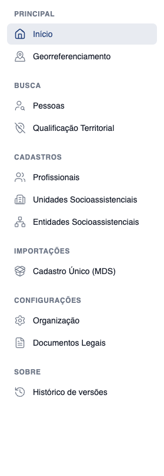
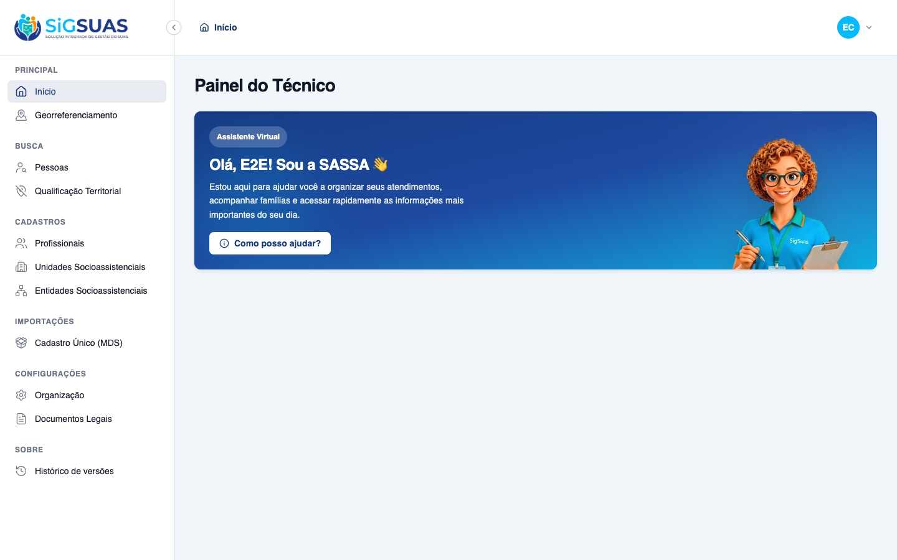

5 critérios de aceite verificados. CA01 evidenciado ao vivo no navegador (menu lateral renderizado com a nova estrutura de 6 grupos, batendo item-a-item com a proposta aprovada). CA02, CA03, CA04 e CA05 cobertos pela suíte Vitest de sidebar-menu (10 testes, todos verdes) — apêndice. Resultado geral: todos os critérios atendidos.
| CA | Critério | Status |
|---|---|---|
| CA01 | Estrutura bate com a proposta | ATENDIDO · navegador |
| CA02 | Menu extraído do componente | ATENDIDO · automatizado |
| CA03 | Nenhuma rota fica órfã | ATENDIDO · automatizado |
| CA04 | Permissões preservadas | ATENDIDO · automatizado |
| CA05 | Código morto resolvido | ATENDIDO · automatizado |
Critério (Gherkin): Dado a proposta aprovada como referência, quando comparo o menu renderizado no Client, então a ordem dos grupos, a ordem dos itens dentro de cada grupo e os rótulos correspondem exatamente ao documento, item a item.
Como foi testado: Login como Master (52998224725) → aceite dos documentos legais → chegada ao /app. Menu lateral capturado isolado e na página completa. Estrutura observada: PRINCIPAL (Início, Georreferenciamento) · Busca (Pessoas, Qualificação Territorial) · Cadastros (Profissionais, Unidades Socioassistenciais, Entidades Socioassistenciais) · Importações (Cadastro Único (MDS)) · Configurações (Organização, Documentos Legais) · Sobre (Histórico de versões).


Critério (Gherkin): Dado o código do Client, quando procuro a definição do menu, então ela vive em client/src/components/app/sidebar-menu.ts, no mesmo formato do Admin (MenuGroup → MenuSubgroup → MenuItem) e client/src/types/menu.ts reflete essa estrutura ou é removido.
Como foi testado: Definição extraída para client/src/components/app/sidebar-menu.ts (formato do Admin: MenuGroup → MenuSubgroup → MenuItem + helpers groupItems()/collapsibleGroupIds). types/menu.ts (tipo achatado obsoleto, sem imports) removido. Suíte de estrutura valida os grupos, o flag collapsible e os renames.
Evidência por cobertura automatizada — ver Anexo.
Critério (Gherkin): Dado a reorganização aplicada, quando cruzo os itens do menu com as rotas registradas no router do Client, então toda rota navegável tem entrada no menu ou está declarada como intencionalmente fora dele.
Como foi testado: Teste cruza os routeName do menu com os nomes de rota do router. Rotas de detalhe/CRUD/auth/erro declaradas na allowlist de 'intencionalmente fora' (inclui usuarios). Falha se surgir rota órfã fora da allowlist.
Evidência por cobertura automatizada — ver Anexo.
Critério (Gherkin): Dado um profissional sem a permissão de um item movido, quando ele abre o menu, então o item continua oculto após a reorganização — mover item não pode vazar acesso.
Como foi testado: Testes de gating montam o AppSidebar com um me-store mockado e variam hasPermission: (1) com todas as permissões, todos os grupos/itens; (2) sem permissões, itens gated ocultos e grupos vazios omitidos; (3) permissão pontual reexibe item e grupo. No print do CA01 (Master com as 6 permissões) todos os itens gated aparecem — comportamento esperado.
Evidência por cobertura automatizada — ver Anexo.
Critério (Gherkin): Dado o bloco 'Gestão de Usuário' hoje comentado, quando a reorganização é entregue, então ele foi promovido a item real ou removido do arquivo — não permanece comentado.
Como foi testado: O bloco comentado 'Gestão de Usuário' foi removido do AppSidebar.vue (decisão de escopo: a proposta não lista gestão de usuários; a rota usuarios segue navegável fora do menu, registrada na allowlist do CA03).
Evidência por cobertura automatizada — ver Anexo.
RUN v2.1.9 /Users/binho/Projetos/esuas-all/client
✓ src/components/app/sidebar-menu.test.ts > sidebar-menu (estrutura — CA01/CA02) > reproduz a ordem exata de grupos da proposta aprovada
✓ src/components/app/sidebar-menu.test.ts > sidebar-menu (estrutura — CA01/CA02) > apenas PRINCIPAL é flat; demais grupos são collapsible
✓ src/components/app/sidebar-menu.test.ts > sidebar-menu (estrutura — CA01/CA02) > reproduz itens, ordem, rótulos e rotas item-a-item (CA01)
✓ src/components/app/sidebar-menu.test.ts > sidebar-menu (estrutura — CA01/CA02) > aplica os renames aprovados: "Organização" e "Pessoas" (rotas inalteradas)
✓ src/components/app/sidebar-menu.test.ts > sidebar-menu × router (CA03) > toda rota do menu existe no router
✓ src/components/app/sidebar-menu.test.ts > sidebar-menu × router (CA03) > não há rota órfã: toda rota nomeada está no menu ou na allowlist
✓ src/components/app/sidebar-menu.test.ts > sidebar-menu × router (CA03) > a allowlist não contém rota morta (todas existem no router)
✓ src/components/app/sidebar-menu.test.ts > AppSidebar gating por permissão (CA04) > com todas as permissões, renderiza todos os grupos e itens
✓ src/components/app/sidebar-menu.test.ts > AppSidebar gating por permissão (CA04) > sem permissões, oculta itens gated e omite grupos que ficam vazios
✓ src/components/app/sidebar-menu.test.ts > AppSidebar gating por permissão (CA04) > permissão pontual reexibe o item e o grupo correspondente
Test Files 1 passed (1)
Tests 10 passed (10)
Start at 16:47:34
Duration 764ms (transform 143ms, setup 9ms, collect 272ms, tests 25ms, environment 246ms, prepare 39ms)